무선설비기사 (2023-06-17 기출문제)
1과목: 디지털 전자회로
1. 다음 그림과 같은 평활회로에서 출력 맥동률을 최소화하기 위한 방법으로 옳은 것은? (단, L : Reactance, C : Capacotance)
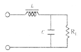
- L과 C 값을 적절하게 감소시킨다.
- L값은 증가, C값은 감소시킨다.
- L값은 감소, C값은 증가시킨다.
- L과 C 값을 적절하게 증가시킨다.
(정답률: 76%)
2. 아날로그 저항계의 (+) 리드를 다이오드의 캐소드(cathode) 단자에, (-) 리드를 애노드(anode) 단자에 접속하면 저항계에 표시되는 저항 값은?
- 매우 적다.
- 대단히 크거나 개방된다.
- 처음에는 높다가 100[Ω] 정도로 감소한다.
- 점차적으로 증가한다.
(정답률: 73%)
3. 그림은 중간탭 전파정류회로이다. 80[V], 10[kHz]의 피크 정현파가 1차 권선에 인가될 때 2차측 각 다이오드에 인가되는 피크전압은? (단, 다이오드 D1과 D2의 장벽전압은 0.7[V]이다.)
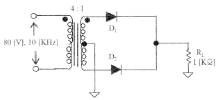
- 9.3[V]
- 8.6[V]
- 10[V]
- 20[V]
(정답률: 50%)
4. 다음 주어진 회로는 어떤 종류의 회로인가?
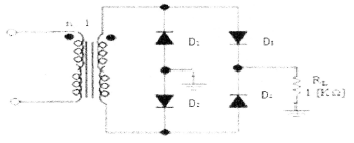
- 클리핑 회로
- 중간탭 전파정류회로
- 브릿지 전파정류회로
- 전압체배회로
(정답률: 76%)
5. 다음 중 임의의 바이어스 회로에 증가형 MOSFET를 적용하기 어려운 것은?
- 전류궤환바이어스회로
- 자기바이어스회로
- 전압분배바이어스
- 드레인궤환바이어스
(정답률: 62%)
6. 부궤환 증폭회로의 연결방식 중 전압-직렬궤환을 사용했을 때 입력 임피던스와 출력 임피던스는 각각 어떻게 되는가?
- 임력 임피던스 : 감소, 출력 임피던스 : 감소
- 임력 임피던스 : 감소, 출력 임피던스 : 증가
- 임력 임피던스 : 증가, 출력 임피던스 : 감소
- 임력 임피던스 : 증가, 출력 임피던스 : 증가
(정답률: 72%)
7. 증폭기 출력에 고조파가 포함되는 전력증폭기와 이를 제거하기 위해 사용되는 회로는?
- A급 전력증폭기, LC 동조회로
- B급 전력증폭기, RC 동조회로
- C급 전력증폭기, LC 동조회로
- AB급 전력증폭기, RC 동조회로
(정답률: 63%)
8. 다음과 같은 궤환 증폭회로(부궤환)의 궤환 증폭도(Af)는?
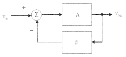
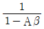
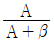
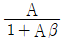
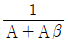
(정답률: 85%)
9. 다음 중 버퍼(Buffer) 증폭기에 사용하기 가장 적합한 것은?
- 공통 베이스 증폭기
- 공통 이미터 증폭기
- 공통 컬렉터 증폭기
- 캐스코드 증폭기
(정답률: 53%)
10. 다음 중 수정발진기에서 안정된 발진을 계속하기 위한 수정편의 임피던스 조건은?
- 용량성
- 저항성
- 유도성
- 저항성 + 용량성
(정답률: 76%)
11. 진폭변조회로에서 반송파전력 Pc를 변조율 m[%]로 변조했을 때, 피변조파 전력 Pm을 구하는 식은?
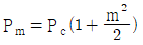
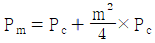
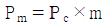
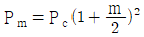
(정답률: 80%)
12. 다음 중 정합필터에 대한 설명으로 옳지 않은 것은?
- S/N비를 향상시킬 목적으로 사용된다.
- 동기검파기로 사용된다.
- 출력은 입력신호의 에너지와 같다.
- 정합필터의 출력은 임펄스 응답과 입력 시간 함수의 곱이다.
(정답률: 57%)
13. 어떤 진폭변조의 피변조파 전압이 Vm=(200+100cos2π×100t)sin2π×106로 표시될 때, 변조도는 얼마인가?
- 0.2
- 0.3
- 0.4
- 0.5
(정답률: 61%)
14. 다음 중 구형파를 발생시키는 발진기는?
- 수정발진기
- 멀티바이브레이터
- 플레이트동조발진기
- 다이네트론발진기
(정답률: 86%)
15. 정보기입 방식 중 '1' 또는 '0'을 기억한 후 반드시 0레벨로 돌아가는 방식은?
- RB방식
- 위상변조 방식
- RZ방식
- NRZ방식
(정답률: 74%)

16. 다음 중 파형 조작 회로에서 클리퍼(Clipper) 회로에 대한 설명으로 옳은 것은?
- 입력 파형에서 특정한 기준 레벨의 윗부분 또는 아랫부분을 제거하는 것
- 입력 파형에 직류분을 가하여 출력 레벨을 일정하게 유지하는 것
- 입력 파형중에 어떤 특정 시간의 파형만 도출하는 것
- 입력의 Step전압을 인가하는 것
(정답률: 89%)
17. 다음 부울 함수를 간략화한 것으로 옳은 것은?
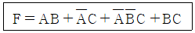
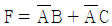
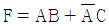
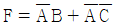
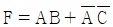
(정답률: 81%)
18. 25진 리플 카운터를 설계할 경우 최소한 몇 개의 플립플롭이 필요한가?
- 3개
- 4개
- 5개
- 6개
(정답률: 90%)
19. 다음 회로와 등가인 회로는?
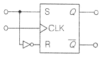
- RS 플립플롭
- JK 플립플롭
- D 플립플롭
- T 플립플롭
(정답률: 80%)
20. 비동기 카운터의 설명으로 옳지 않은 것은?
- 리플 카운터라고도 한다.
- 동기식 카운터 보다 회로가 간단하다.
- 전단의 출력이 다음 단의 트리거 입력이 된다.
- 동기식 카운터 보다 속도가 빠르다.
(정답률: 70%)
2과목: 무선통신 기기
21. 아래 그림과 같이 FM 변조기를 이용하여 PM 변조를 하고자 할 때 (가), (나)에 들어갈 내용으로 적합한 것은?
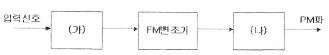
- (가) 미분기, (나) 적분기
- (가) 적분기, (나) 없음
- (가) 적분기, (나) 미분기
- (가) 미분기, (나) 없음
(정답률: 74%)
22. 위성위치확인시스템(GPS) 측위 기법의 종류가 아닌 것은?
- RTK(Real Time Kinematic)
- PDOP(Position Dilution of Precision)
- DGPS(Difference GPS)
- 후처리 상대측위 방식
(정답률: 54%)
23. AM 송신기 구성요소 중 주파수 체배기에서 원하는 반송파를 얻기 위하여 사용하는 증폭기는?
- A급 증폭기
- B급 증폭기
- C급 증폭기
- D급 증폭기
(정답률: 62%)
24. 다음 중 레이더(FADAR) 추적장치의 데이터 처리방식으로 옳은 것은?
- 일괄 처리
- 실시간 처리
- 분산 처리
- 온라인 처리
(정답률: 85%)
25. 위성위치확인시스템(GPS) 운용에서 가장 큰 문제 중 하나인 전파 교란에 속하지 않는 것은?
- 재밍
- 전파 차단
- 재방송
- 신호 성형
(정답률: 64%)
26. 해안국의 인쇄전신 또는 데이터 전송의 송신설비에 사용하는 전파 중 협대역 위상편이 방식(PSK: Phase Shift Keying) 운용을 위한 송신설비 전파의 주파수 허용편차는?
- 3[Hz]
- 5[Hz]
- 3[kHz]
- 5[kHz]
(정답률: 55%)
27. 급전선의 특성임피던스 측정법에 속하지 않는 것은?
- 정재파비에 의한 측정법
- 급전선 단락에 의한 측정법
- 급전선 개방에 의한 측정법
- 도파관 활용에 의한 측정법
(정답률: 63%)
28. CAS(Conditional Access System) 접근제어 방식에 대한 설명으로 틀린 것은?
- 콘텐츠 보호(Contents Protection)
- 지적 재산권 원천 보호
- 권한을 가진자만 접근 허용
- CATV, 위성 TV 등 유료방송에서 주로 사용
(정답률: 69%)
29. 송·수신기 회로에서 임피던스 부정합시 발생하는 문제점에 대한 설명으로 틀린 것은?
- 안테나에 공급되는 전력이 감소한다.
- 급전선의 절연이 파괴된다.
- 급전선에서 방사가 발생한다.
- 송신기의 동작이 안정적이다.
(정답률: 85%)
30. DTV(Digital TV) 중계방식 중 SFN(Single Frequency Network) 운용시 충족조건에 속하지 않는 것은?
- Same Device
- Same Frequency
- Same Time
- Same Data
(정답률: 75%)
31. 무선전력전송기술에 대한 설명으로 틀린 것은?
- 전선을 사용하지 않고 전기에너지를 전송하는 기술이다.
- 투과성이 우수한 비접촉식 유도결합방식이 먼저 상용화 되었다.
- 전자기 유도방식, 자기공명 방식, 마이크로 웨이브방식 등이 있다.
- 모든 방식이 인체에 전혀 무해한 기술이다.
(정답률: 86%)
32. IEEE 마이크로웨이브 주파수밴드 구분에서 주파수가 낮은 것에서 높은 순서대로 열거된 것은?
- C – L – S - K
- C – K – L - S
- L – S – K - C
- L – S – C – K
(정답률: 75%)
33. LC 회로에서 공진 주파수가 1,200[kHz]일 때 고주파 1[A]가 흐르고 980[kHz]와 1,020[kHz]에서 1[A]의 전류가 흘렀을 경우 코일의 Q값은?
- 30
- 40
- 50
- 60
(정답률: 63%)
34. 다음의 디지털 변조 방법과 설명으로 옳게 연결한 것은?
- ASK – 두 개의 비트 값에 각기 다른 주파수 신호를 대응하여 사용한다.
- FSK- 비트 값을 나타내기 위해 위상을 변화시킨다.
- PSK – 두 개의 비트 값에 각기 다른 진폭을 대응하여 사용한다.
- 16QAM – 비트를 나타내기 위해 위상과 진폭을 모두 변화시킨다.
(정답률: 88%)
35. 수신설비가 갖추어야 하는 요건으로 틀린 것은?
- 신호의 반사손실이 최대일 것
- 선택도가 클 것
- 내부 잡음이 적을 것
- 수신주파수는 운용범위 이내일 것
(정답률: 76%)
36. 정격부하일 때 전압이 200[V], 무부하시 전압이 220[V]인 전원이 있을 때 전압 변동율은?
- 1[%]
- 5[%]
- 10[%]
- 20[%]
(정답률: 85%)
37. MIMO(Multiple Input Multiple Output) 안테나 동작 원리에 대한 설명으로 틀린 것은?
- 다중 송·수신 안테나 사용
- 다이버시티 이득 향상 기술 적용
- 대역 확산 통신방식
- 고속 데이터 통신
(정답률: 58%)
38. 광역 보정 위성 항법시스템(WADGPS)에 대한 설명으로 틀린 것은?
- 지구 정지궤도 위성을 이용한다.
- 정지위성과 기지국으로 구성되어있다.
- 기지국은 광역기준국, 광역 주기지국, 지상국으로 구성되어있다.
- 보정값을 지상의 무선통신망을 이용하여 이동체에 제공한다.
(정답률: 61%)
39. DSB-LC(Double Side Band Large Carrier) 진폭변조 방식의 AM피변조파의 하측파대 : 반송파 : 상측파대의 전력 비율로 옳은 것은? (단, 반송파의 전력비율을 1로 설정)
- m2 : 1 : m2
- m2/2 : 1 : m2/2
- m2/3 : 1 : m2/3
- m2/4 : 1 : m2/4
(정답률: 80%)
40. 다음 중 VSB(Vestigial Side Band) 통신방식에 대한 설명으로 옳은 것은?
- 반송파의 주파수를 신호파의 진폭에 따라 변화시키는 변조방식
- 진폭변조로 인하여 반송파의 상측파대와 하측파대를 함께 전송하는 방식
- 주파수의 폭을 줄이기 위하여 변조 후 나타나는 양측파대 중 단지 하나만 취한 것
- 진폭변조에서 한쪽의 측파대에 포함되는 변조 신호의 고역에 대응하는 성분을 크게 감쇠시켰을 때의 나머지 부분
(정답률: 69%)
3과목: 안테나 공학
41. 다음 중 반파장 다이폴 안테나와 비교한 폴디드 안테나에 대한 설명으로 틀린 것은?
- 이득, 지향성은 반파장 다이폴 안테나와 동일하다.
- 반파장 다이폴 안테나에 비하여 도체의 유효단면적이 크다.
- 급전점 임피던스는 약 150[Ω]으로 반파장 다이폴 안테나의 2배이다.
- 반파장 다이폴 안테나보다 광대역성을 갖고 실효고는 약 2배이다.
(정답률: 58%)
42. 다음 중 급전선에 관한 설명으로 틀린 것은?
- 사용 주파수에 따라 무손실 급전선의 특성 임피던스는 달라진다.
- 급전선의 길이가 길면 손실도 커진다.
- 도선의 굵기와 간격의 비율이 같으면 임피던스도 같다.
- 급전선에서의 손실은 √f 에 비례하여 커진다.
(정답률: 39%)
43. 다음 중 비동조 급전선에 관한 설명으로 틀린 것은?
- 비동조 급전선의 예로는 도파관, 동축케이블 등이다.
- 송신부와 안테나의 거리가 가까울 때 사용한다.
- 급전선상에 진행파만 존재하도록 정합장치가 필요하다.
- 동조 급전선에 비해 효율이 양호하고 외부방해가 없다.
(정답률: 63%)
44. 다음 중 전자파 장해 방지 대책이 아닌 것은?
- RF회로 분리 배치한다.
- 부품의 실장 밀도를 높인다.
- 샤시접지 및 회로접지를 한다.
- 전원 및 신호라인의 커먼 모드 필터를 사용한다.
(정답률: 73%)
45. 다음 중 국내 전자파 적합성 평가 면제 대상 기자재가 아닌 것은?
- 해외에서 제조하여 국내에 수입되는 기자재
- 국내에서 제조하여 외국에 전량 수출할 목적으로 제조하는 기자재
- 외국에 재수출하거나 외국에 납품할 목적으로 국내 반입하는 기자재
- 제품 및 방송통신서비스의 연구 및 기술개발 등에 사용하기 위한 기자재
(정답률: 63%)
46. 다음 중 도파관에 대한 설명으로 틀린 것은?
- 도파관은 차단 주파수 이하의 주파수는 통과시키지 않는다.
- 저항손실이 적다.
- TE mode는 진행방향에 대해 전계 E는 나란하고 자계 H는 직각인파를 말한다.
- 도파관에서는 변위전류의 관내에서만 발생하므로 전자파를 외부에 방사하거나 수신하는 일이 없다.
(정답률: 68%)
47. 다음 중 국내 전자파인체보호기준에 따라 전자파 강도 기준에 적용이 되지 않는 전기설비(송신선로)의 주파수 대역은?
- 60[Hz] 주파수 대역
- 300[Hz] 주파수 대역
- 1[KHz] 주파수 대역
- 10[MHz] 주파수 대역
(정답률: 64%)
48. 다음 중 가상접지에 대한 설명으로 틀린 것은?
- 대지의 도전율이 나쁜 곳에서 사용된다.
- 지상고 2.5[m] 이상에 도체망을 설치하는 방식이다.
- 도체망과 대지사이에 변위전위가 흐르게 하여 접지한다.
- 도체망의 가설 면적을 작게 해야 좋은 효과를 얻을 수 있다.
(정답률: 82%)
49. 다음 중 전자밀도가 2배 증가할 때 임계 주파수의 변화는?
- 2배 감소한다.
- 2배 증가한다.
- √2배 증가한다.
- √2배 감소한다.
(정답률: 67%)
50. 저자파장해 수신기는 전송선로의 부하에 나타나는 전압을 측정하게 되는데, 우리가 필요로 하는 측정량은 피측정기기로부터 방출되는 전기장의 세기이다. 아래 조건처럼 수신기에 나타난 전압과 전기장의 세기를 알 경우 안테나 인자(K)는 얼마인가? (조건 : 안테나에 연결된 전송선로를 거쳐서 전자파장해 수신기에 나타난 전압(VL) = 20[dBμV], 전기장세기(E) = 25[dBμV])
- 5[dB/m]
- 20[dB/m]
- 25[dB/m]
- 45[dB/m]
(정답률: 60%)
51. 고출력·누설 전자파에 대한 방사성 방호성능 측정방법에서 차폐성능을 측정하기 위한 절차로 바르게 나열한 것은?
- 측정계획의 수립 → 측정주파수 및 측정지점 확인 → 측정대상 및 시설 주변의 전파환경 측정 → 시험값 측정 → 기준값 측정 → 차폐성능 평가
- 측정주파수 및 측정지점 확인 → 측정계획의 수립 → 측정대상 및 시설 주변의 전파환경 측정 → 시험값 측정 → 기준값 측정 → 차폐성능 평가
- 측정계획의 수립 → 측정대상 및 시설 주변의 전파환경 측정 → 측정주파수 및 측정지점 확인 → 기준값 측정 → 시험값 측정 → 차폐성능 평가
- 측정주파수 및 측정지점 확인 → 측정대상 및 시설 주변의 전파환경 측정 → 측정계획의 수립 → 기준값 측정 → 시험값 측정 → 차폐성능 평가
(정답률: 65%)
52. 다음 중 방사상 접지에 대한 설명으로 틀린 것은?
- 지중 동판식이라고도 한다.
- 접지 저항은 약 5[Ω] 정도이다.
- 중파 방송은 안테나에 주로 사용된다.
- 여러 동선을 안테나를 중심으로 방사형으로 땅속에 매설한다.
(정답률: 60%)
53. 다음 중 거리에 따라 감쇠가 가장 급격하게 발생하는 것은?
- 정전계
- 유도계
- 복사전계
- 복사자계
(정답률: 70%)
54. 다음은 케이블의 노이즈를 방지하기 위해서 사용하는 것으로 용도에 따라 캐패시턴스를 높여 저주파 신호를 차단하거나 인덕턴스값을 높여 고주파 노이즈를 차단할 수 있다. 이 장치(부품)의 명칭은?
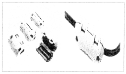
- 애자
- 동글이
- 아두이노
- 페라이트 코어
(정답률: 82%)
55. 다음 내용이 설명하는 안테나 용어는 무엇인가?
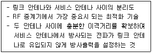
- 틸팅
- 전파간섭
- 다이버시티
- 아이솔레이션
(정답률: 73%)
56. 전자계에서 전계의 세기를 E, 자계의 세기를 H, 전계와 자계 사이의 각을 θ(θ ＜90°)라고 할 때 포인팅(Poynting) 벡터의 크기는 어떻게 표시되는가?
- EH sinθ
- EH cosθ
- EH tanθ
- EH
(정답률: 67%)
57. 다음 중 통신위성에서 통신량이 많은 특정지역만을 커버하며 예민한 지향성을 갖는 안테나는?
- 스폿빔 안테나
- 비콘 안테나
- 글로벌 안테나
- 반구/존 안테나
(정답률: 80%)
58. 다음 중 슬롯 어레이(Slot array) 안테나에 대한 설명으로 적합하지 않은 것은?
- 소형 경량이다.
- 전기적 특성이 좋다.
- 고이득이지만 부엽이 많다.
- UHF TV 방송, 선박용 레이더 안테나 등에 사용된다.
(정답률: 68%)
59. 안테나에 광대역성을 갖게 하는 방법으로 틀린 것은?
- 보상회로를 사용하는 방법이 있다.
- 자기 상사형으로 하는 방법이 있다.
- 안테나의 Q를 높이는 방법을 사용한다.
- 상호 임피던스 특성을 이용하는 방법이 있다.
(정답률: 70%)
60. 다음 중 안테나 실효개구면적이 잘못 표현된 것은?
- 미소다이폴 안테나의 실효개구면적은 0.119λ2 이다.
- 루프(Loop) 안테나의 실효개구면적은 0.119λ2 이다.
- 등방성안테나의 실효개구면적은 0.131λ2 이다.
- 반파장다이폴 안테나의 실효개구면적은 0.131λ2 이다.
(정답률: 61%)
4과목: 무선통신 시스템
61. 다음 중 무선통신 안테나 선정 시 검토사항으로 틀린 것은?
- 전후방비가 커야 한다.
- 정재파비가 커야 한다.
- 급전선 계통의 손실이 작아야 한다.
- 안테나 결합손실이 작고 직진성이 좋아야 한다.
(정답률: 76%)
62. 통신시스템의 접지선을 점검하는 항목으로 거리가 먼 것은?
- 노출되는 접지 계통도의 경우 적절한 보호가 되었는가?
- 접지극의 매설 깊이가 적정하게 매설되어 있는가?
- 각 계통의 접지극은 상호 통합하여 시공되어 있는가?
- 접지저항은 측정할 수 있는 테스트용 접지 단자가 있는가?
(정답률: 65%)
63. 다음 중 위성위치확인시스템(GPS)에 대한 특징으로 잘못 설명한 것은?
- 3차원의 위치, 고도 및 시간을 측정할 수 있다.
- 국가별 고유 좌표계를 통해 측정이 가능하다.
- 수동적이며 무제한 사용 가능하다.
- 전세계적으로 24시간 연속적인 서비스 제공이 가느아다.
(정답률: 66%)
64. 안테나의 특성 측정항목에 해당되지 않는 것은?
- 고유 주파수
- 실효고
- 지향성
- 변조도
(정답률: 70%)
65. 다음 중 OFDM 기술의 이론적인 장점이 아닌 것은?
- 다중 병렬 처리로 고속의 데이터 전송이 가능하다.
- PAPR(Peak-to-Average Power Ratio)값이 CDMA 대비 작다.
- 다중 경로 페이딩(Multi Path Fading)에서 좋은 특성을 보인다.
- 서브 캐리어간에 직교성이 유지된다.
(정답률: 75%)
66. 전위강하법으로 접지저항을 다음과 같이 측정되었을 때 접지저항은 몇 [Ω] 인가?
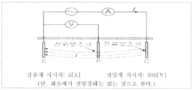
- 0.025
- 40
- 200
- 5000
(정답률: 79%)
67. 공공안전통신망의 국가 재난안전통신망과 상호연계를 위한 철도통신망은 다음 중 어느 것인가?
- LTE-PS
- LTE-M
- LTE-T
- LTE-R
(정답률: 80%)
68. 다음 중 무선통신망 치국 계획상 고려할 사항에 해당하지 않는 것은?
- 총장비 이득
- 총경로 손실
- 통신망 성능
- 가시거리 확보
(정답률: 67%)
69. 다음 중 셀룰러 이동 통신에서 가입자가 셀간 이동할 때 통화가 끊김 없이 지속되도록 기지국간 취하는 제반 제어 과정을 무엇이라고 하는가?
- 핸드오프
- 위치등록
- 가입자 식별
- 로밍
(정답률: 86%)
70. 다음 중 5GHz 대역에서 기가비트 전송률이 가능하여 '기가비트 와이파이'라고도 불리는 무선랜 표준은?
- 802.11g
- 802.11n
- 802.11ac
- 802.11ax
(정답률: 59%)
71. 특정 서비스에 종속적이지 않으면서 사물인터넷 서비스를 구현하기 위해 기기의 연결, 관리기능, 데이터 수집, 가공 등을 제공하는 통합시스템은?
- 사물인터넷 관리시스템
- 사물인터넷 플랫폼
- 정부사물인터넷
- 사물인터넷 처리시스템
(정답률: 64%)
72. VHF(Very High Frequency)대역 2개 채널을 사용하여 국내 지상파 DMB(Digital Multimedia Broadcasting)를 송출할 때 사용할 수 있는 채널 블록의 수는?
- 2블록
- 4블록
- 6블록
- 12블록
(정답률: 60%)
73. 무선 LAN에서 무선 단말기를 네트워크에 접속시켜 주는 장치는?
- 서버(Server)
- 라우터(Router)
- 리피터(Repeater)
- AP(Access Point)
(정답률: 71%)
74. 다음 중 OSI 7계층에서 데이터링크 계층의 역할(기능)이 아닌 것은?
- 오류제어
- 흐름제어
- 경로설정
- 데이터의 노드 대 노드 전달
(정답률: 63%)
75. LoRa(Long Range) IoT기술의 시스템 구성요소가 아닌 것은?
- 네트워크 서버(Network Server)
- 응용 서버(Application Server)
- 게이트웨이(Gateway)
- 기지국(Base station)
(정답률: 65%)
76. IEE 802.11 우선 LAN규격에서 최대전송속도가 가장 빠른 규격은?
- IEEE.11b
- IEEE.11g
- IEEE.11n
- IEEE.11a
(정답률: 75%)
77. 다음 중 무선 LAN에서 사용되는 MAC(Medium Access Control)방식은?
- CSMA
- CSMA/CD
- CSMA/CA
- Token passing
(정답률: 75%)
78. 다음 중 무선을 이용한 홈네트워크 전송 기술에 해당되지 않는 것은?
- USB
- Bluetooth
- Wireless LAN
- HomeRF
(정답률: 84%)
79. 재난안전통신망의 구성요소가 아닌 것은?
- 보수센터
- 운영센터
- 광통신망
- 기지국
(정답률: 64%)
80. 다음 중 마이크의 입력 이득을 조정하기 위한 조정장치는?
- Automatic Gain Control
- RF Gain Control
- Balance Control
- MIC Gain Control
(정답률: 80%)
5과목: 전자계산기 일반 및 무선설비기준
81. 다음 중 무선국의 개설허가를 받고자 제출하는 허가 신청서에 첨부하여야 하는 서류는?
- 무선국의 운영 상태를 나타내는 재정관련 서류
- 무선설비의 주파수 대역별 주파수 이용 허가서류
- 무선설비의 공사설계서와 시설개요서
- 무선설비의 전파자원이용 중·장기 계획서
(정답률: 60%)
82. IPsec VPN에서 사용하는 ESP포맷에 대한 설명으로 틀린 것은?
- SPI는 목적지 IP주소와 조합하여 현재 패킷의 SA값을 표시한다.
- 순서번호는 32비트이다.
- ESP 트레일러(trailer)는 패딩을 포함한다.
- SPI와 데이터는 암호화하지 않는다.
(정답률: 67%)
83. 다음 중 네트워크 가상화(Network Virtualzation)를 구현하는 기술이 아닌 것은?
- VLAN
- VPN
- NFV
- CSMA/CA
(정답률: 78%)
84. 무선설비를 둘 이상의 기간통신사업자나 방송사업자가 공동으로 설치하여 사용 시 무선국 검사수수료 20퍼센트 감면대상 무선국에 해당하지 않는 것은?
- 고정국
- 기지국
- 육상국
- 이동중계국
(정답률: 61%)
85. 다음 중 방화벽(Firewall)에 대한 설명으로 틀린 것은?
- 로그와 통계자료 제공이 가능하다.
- 우회된 트랙픽은 제어가 불가능하다.
- 보안정책을 기준으로 특정 트래픽만 허용 및 차단이 가능하다.
- 방화벽 종류에는 Packet Filtering, Circuitm Gateway 방식, Hybrid 방식 등이 있다.
(정답률: 76%)
86. 다음 중 전파감시 업무를 수행하여야 하는 목적으로 틀린 것은?
- 혼신의 신속한 제거를 위하여
- 새로운 전파자원의 확보를 위하여
- 전파이용 질서의 유지 및 보호를 위하여
- 전파의 효율적 이용을 촉진하기 위하여
(정답률: 83%)
87. 방송통신기자재 적합성평가 지정시험기관으로 지정을 한 경우 고시사항이 아닌 것은?
- 대표자명
- 명칭 및 소재지
- 시험분야 및 시험종목
- 지정번호
(정답률: 74%)
88. 운영체제나 네트워크 장비 등 시스템의 보안 취약점이 발견된 뒤 이를 막을 수 있는 패치가 발표되기 전에 취약점을 이용한 해킹공격을 무엇이라 하는가?
- 제로데이 공격
- APT 공격
- 공급망 공격
- 워터링 홀 공격
(정답률: 77%)
89. 항공법에서 규정한 경량항공기의 의무 항공기국은 정기검사 유효기간이 얼마인가?
- 1년
- 2년
- 3년
- 4년
(정답률: 68%)
90. 방송국 개설허가 심사는 어디에서 관장 하는가?
- 국립전파연구원장
- 문화체육관광부장관
- 과학기술정보통신부장관
- 한국방송통신전파진흥원장
(정답률: 80%)
91. 방송통신의 진흥을 위하여 과학기술정보통신부장관이 할 수 있는 기술지도 방법이 아닌 것은?
- 기술연구활동의 지원
- 기술정보의 제공
- 기술훈련 및 기술전수
- 국내 외 기술협력의 지원
(정답률: 49%)
92. 기억장치에서 CPU로 제공될 수 있는 데이터의 전송량을 기억장치 대역폭이라고 한다. 버스 폭이 32비트이고, 클럭 주파수가 1,000[MHz]일 때 기억장치 대역폭은 얼마인가?
- 40[MBytes/sec]
- 400[MBytes/sec]
- 4,000[MBytes/sec]
- 40,000[MBytes/sec]
(정답률: 74%)
93. 다음 설명 중 아래 ( ) 안에 들어갈 내용으로 적절한 것은?
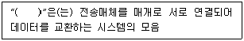
- 프로그램
- 프로토콜
- 인터페이스
- 네트워크
(정답률: 72%)
94. 무선설비의 안타나계에 접지시설을 설치하지 않아도 되는 무선설비는?
- 기지국의 무선설비
- 선박국의 무선설비
- 지구국의 무선설비
- 간이무선국의 안타나계
(정답률: 71%)
95. 다음 중 DMA(Direct Memory Access)에 대한 설명으로 틀린 것은?
- 주변장치와 기억장치 등의 대용량 데이터 전송에 적합하다.
- 프로그램 방식보다 데이터의 전송속도가 느리다.
- CPU의 개입 없이 메모리와 주변장치 사이에서 데이터 전송을 수행한다.
- DMA 전송이 수행되는 동안 CPU는 메모리 버스를 제어하지 못한다.
(정답률: 68%)
96. IP address '11101011.10001111.11111100.11001111'가 속한 Class는?
- A Class
- B Class
- C Class
- D Class
(정답률: 58%)
97. 다음 중 방송국 개설허가의 유효기간은?
- 1년
- 3년
- 5년
- 8년
(정답률: 73%)
98. 클라우드 컴퓨팅 기술에 대한 설명으로 틀린 것은?
- 아마존은 20⑤년에 자사의 웹 서비스를 통해 유틸리티 컴퓨팅을 기반으로 하는 클라우드컴퓨팅 서비스를 시작
- 20⑤년부터 2007년까지 클라우드컴퓨팅은 SaaS 서비스로 대세를 이루다가 2008년부터는 IaaS, PaaS 등의 서비스 기법으로 영역을 넓힘
- 1960년대 미국의 컴퓨터 학자인 존 맥카시(John McCarthy)가 “컴퓨팅 환경은 공공시설을 사용하는 것과 동일한 것” 이라고 한데에서 시작
- 클라우드로 옮겨간 형태로 오프라인 상태의 폐쇄망을 의미
(정답률: 79%)
99. 다음에서 설명하는 빅데이터 분석기법은?
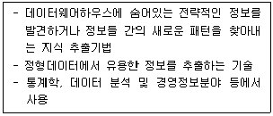
- 텍스트 마이닝(Text Mining)
- 군집분석(Clustering Analytics)
- 평판분석(Opinion Mining)
- 데이터 마이닝(Data Mining)
(정답률: 82%)
100. 공사를 설계한 용역업자는 그가 작성한 실시설계도서를 해당공사가 준공된 후 몇 년간 보관하여야 하는가?
- 1년
- 3년
- 5년
- 7년
(정답률: 73%)